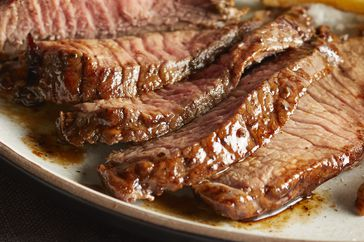

Best Steak Marindae in Existence

No more dry, lackluster hamburgers.
These are juicy, and spices can be easily added or changed to
suit anyone's taste. If you find the meat mixture too mushy,
just add more bread crumbs until it forms patties that hold
their shape.
Ingredients:
- ½ cup olive oil
- ⅓ cup soy sauce
- ⅓ cup fresh lemon juice
- ¼ cup Worcestershire sauce
- 3 tablespoons dried basil
- 1 ½ tablespoons garlic powder
- 1 ½ tablespoons dried parsley flakes
- 1 teaspoon ground white pepper
- 1 teaspoon dried minced garlic (Optional)
- ¼ teaspoon hot pepper sauce (Optional)
Steps:
-
Place olive oil, soy sauce, lemon juice, Worcestershire
sauce, basil, garlic powder, parsley, white pepper, minced
garlic, and hot pepper sauce in a blender; blend on high
speed until thoroughly combined, about 30 seconds.